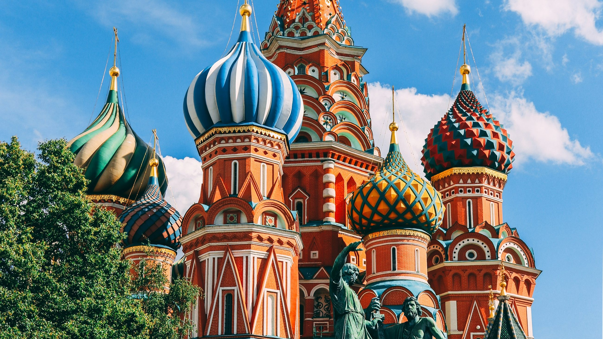

Полный путеводитель для самостоятельных путешественников. Маршруты, дороги, жильё и еда — всё в одном месте.
Один сервис вместо десяти вкладок в браузере
Узнайте заранее — асфальт или грунтовка, нужен ли полный привод, закрыта ли дорога зимой.
Пошаговый маршрут с учётом вашего города отправления и типа транспорта.
Куда лететь, откуда ехать, стоимость трансфера и такси — всё в одном месте.
Отели, гостевые дома, глэмпинг и квартиры — выбор рядом с каждой локацией.
Кафе и рестораны с отзывами путешественников, средним чеком и кухней.
Реальные фотографии и комментарии от туристов, побывавших там совсем недавно.
Скачайте карты региона заранее — работайте без интернета в горах и тайге.
Укажите ваш автомобиль и город — маршруты и советы будут подобраны именно для вас.
Выберите направление
Укажи откуда едешь и на чём — получи готовый маршрут с примерной стоимостью.
По оценкам путешественников
Реальные истории от людей, которые были там